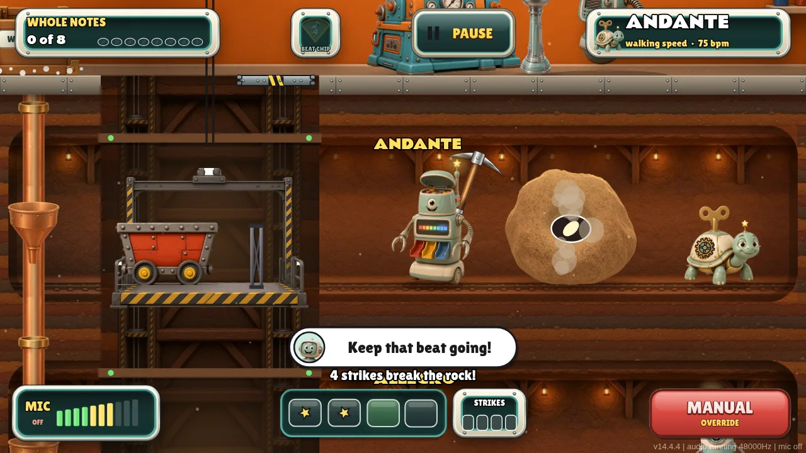
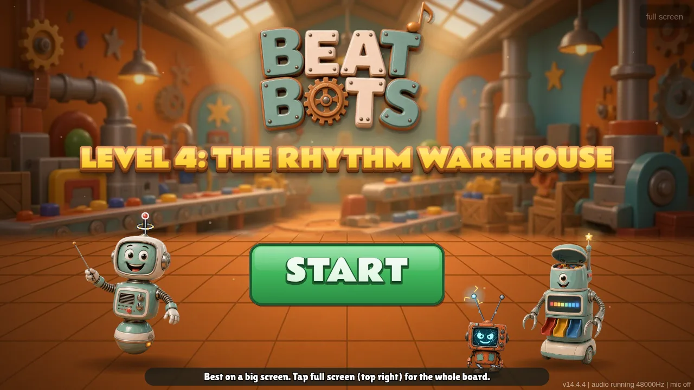
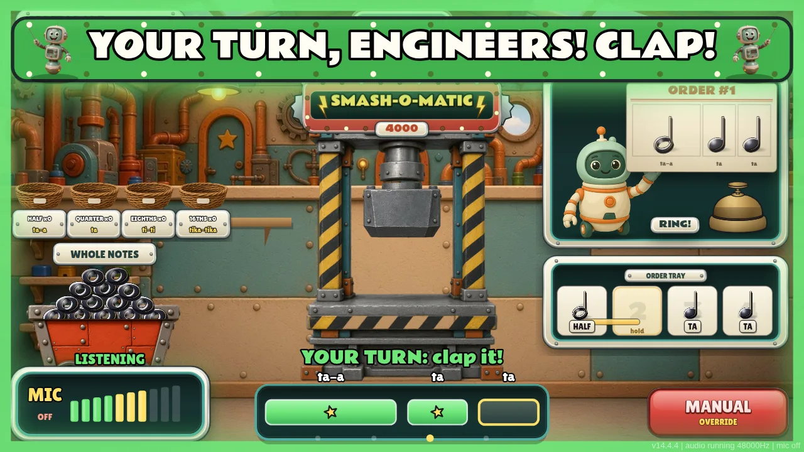
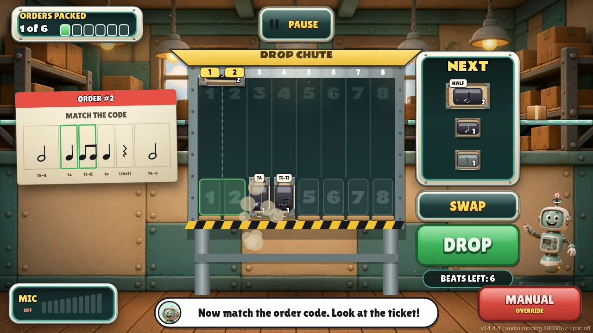
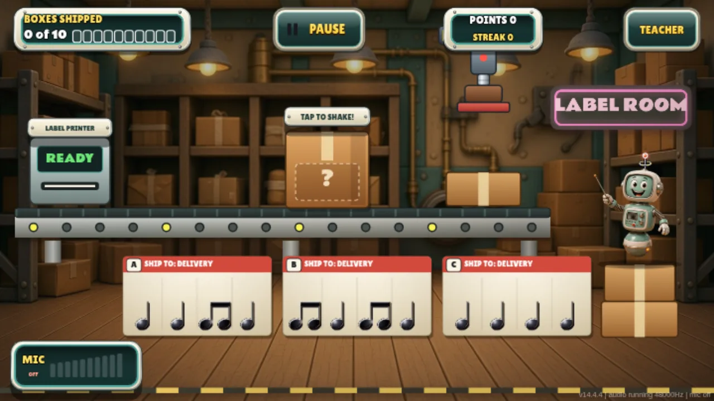
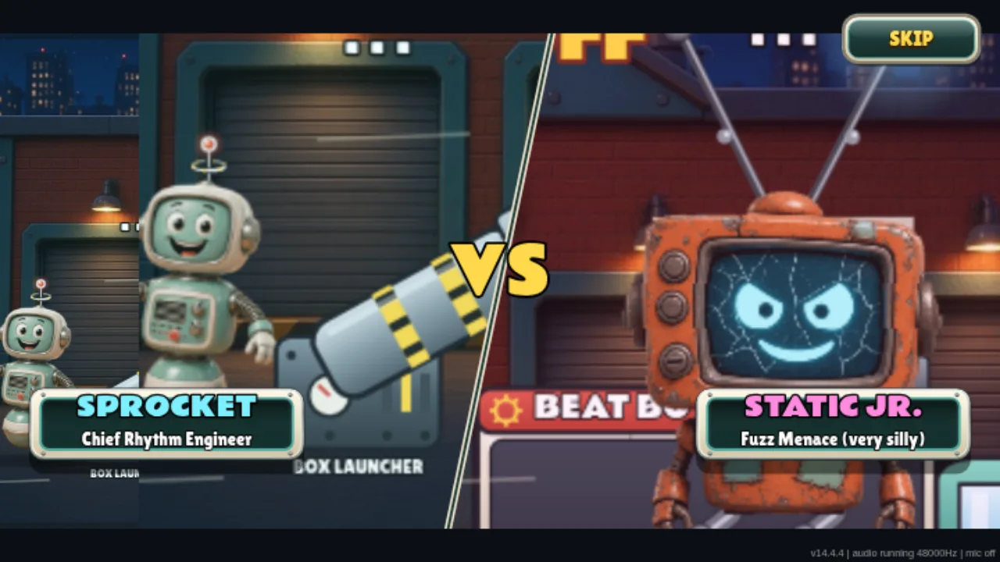

ROOM 1
Note Mine
Static Jr. ate the whole notes. The class keeps a steady beat by clapping to dig them back up.
A clap-along rhythm game where the whole class helps Sprocket fix the Rhythm Warehouse. It listens for claps through the microphone and runs right in the browser, with no install and no accounts.

Click Play Now on the classroom board, a tablet or a computer.
Say yes when the browser asks. The app listens for claps and never saves any audio.
Rhythm Engineers clap along, and Sprocket’s factory comes back to life.

Static Jr. ate the whole notes. The class keeps a steady beat by clapping to dig them back up.

Read the rhythm on each customer order, smash notes into smaller values to meet tika-tika, fill the 4-beat tray and clap it back.

Build your own 8-beat patterns by dropping notes into the chute, then hear the robots play them back. No clapping in this room.

Listen to the rhythm hidden in each box and pick the label whose notation matches. The wrong labels are near misses.

A boss fight with Static Jr.! Clap each box’s rhythm back accurately to launch it at him and fill the delivery truck.
Allow the microphone when asked, or open it full screen.